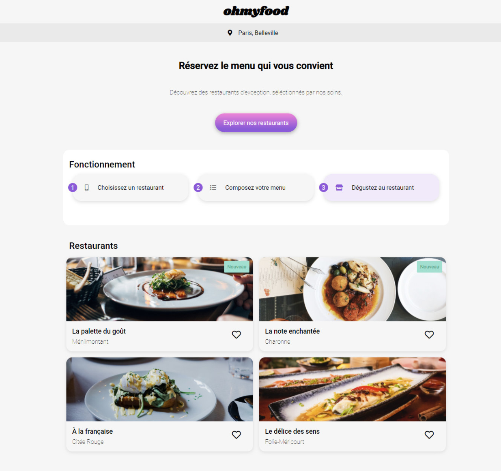

Contexte (fictif) :
- Je viens d'être recruté chez Ohmyfood!, en tant que développeur Junior.
- Son site permet aux usagers de trouver des hébergements et des activités dans la ville de leur choix.
- L'objectif est de développer un site 100% mobile qui répertorie les menus de restaurants gastronomiques.
- En plus des systèmes classiques de réservation, les clients pourront composer le menu de leur repas pour que les plats soient prêts à leur arrivée. Finis, les temps d'attente au restaurant !
